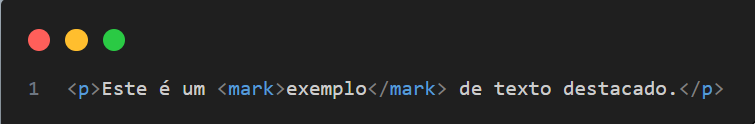
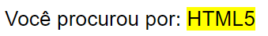
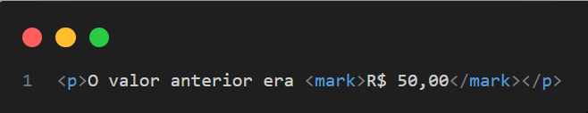
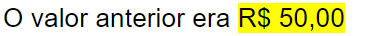

Tag <mark> — Marca Texto no HTML5
A tag <mark> no HTML5 é usada para destacar trechos de texto que são considerados relevantes dentro de um contexto, como em uma busca, revisão ou para dar ênfase temporária.
O que é a tag <mark>?
A <mark> é uma tag semântica introduzida no HTML5. Ela indica que o conteúdo contido nela tem importância ou relevância especial naquele momento, como um texto realçado em amarelo com um marcador.
Exemplo básico
Resultado

Quando usar a tag <mark>
- Resultados de busca: 
- Destaque de alterações em um texto:  
- Ênfase em pontos importantes durante uma leitura ou explicação
Diferença entre <mark> e outras tags
| Tag | Finalidade |
|---|---|
<mark> |
Destacar texto com relevância atual ou contexto especial |
<strong> |
Dar ênfase forte ao texto, indicando importância sem destaque visual |
<em> |
Ênfase leve, normalmente renderizada em itálico |
<span> |
Container genérico para aplicar estilos, sem semântica específica |
Acessibilidade
A tag <mark> melhora a acessibilidade, pois leitores de tela podem anunciar que o trecho está marcado, dependendo do navegador e das configurações do leitor.